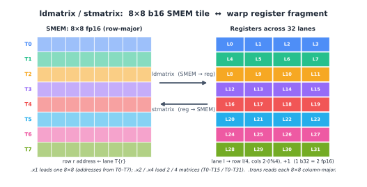

跨 GPU 世代的 Tensor Core 操作数布局¶
概览
- 跨 Ampere、Hopper 与 Blackwell，Tensor Core 仍执行同一高层操作：
D = A B + C。 - 随世代变化的是操作数如何到达 Tensor Core、支持哪些 tile 形状与 dtype，以及累加器住在何处。
- Ampere 使用 warp 级寄存器片段。共享内存 tile 通过
ldmatrix载入片段，累加器留在寄存器中。 - Hopper 让
wgmma通过矩阵描述符直接从共享内存读取操作数。描述符指名 Tensor Core 所期望的共享内存 swizzle 格式。 - Blackwell 保留共享内存操作数通路，但把累加器搬进 TMEM。块缩放 MMA 也通过 TMEM 暂存其缩放因子。
- 两种内存约束在所有世代中都依然存在：全局内存合并访问与共享内存 bank 冲突。
从远处看，Tensor Core 的操作很稳定。它把 A 和 B 的 tile 相乘，加上累加器 C，产生 D。这一形式自 Volta 起未变。
围绕该操作的细节并未固定。在一个世代上快的核函数，到下一代可能变慢。使用了错误布局的核函数还可能算出错误答案，即便逻辑数学仍写着 D = A B + C。原因是 Tensor Core 并不消费抽象矩阵。它消费的是处于非常具体的硬件布局中的操作数。
本章跟随这一布局契约穿越三个世代。Ampere 通过 warp 级寄存器片段暴露 Tensor Core。Hopper 把输入操作数移到共享内存描述符。Blackwell 保留共享内存操作数，但把累加器搬入 TMEM。操作仍是矩阵乘加，但每次进出 Tensor Core 的路径都在变化。
{ref}Data Layout <chap_data_layout> 章中的布局记法是我们描述这些契约所用的语言。Blackwell TMEM 的细节在 chap_tmem 中单独讲述。
两个从未消失的约束¶
在 Tensor Core 介入之前，两个普通内存约束已经塑造着 GPU 核函数的布局。
第一个是全局内存合并访问。当一个 warp 的 32 个通道发起一次全局内存加载时，内存系统希望这些地址落入少数几个连续、对齐的内存段。如果地址散乱，warp 加载就变成多次内存事务。同样的逻辑数据搬运要消耗更多带宽与更多时间。
第二个是共享内存 bank 冲突。共享内存被划分为 32 个 bank。如果一个 warp 中的通道访问映射到同一 bank 的不同地址，这些访问就无法全部同时被服务。硬件把它们串行化。一个作为扁平共享内存数组看似无害的布局，因此可能因其 bank 模式而变慢。
swizzle 是修复共享内存一侧的常用办法。逻辑 tile 保持不变，但物理地址映射被置换，使访问模式散布到各 bank 而非堆叠到同一个 bank 上。
这两种约束即便对从不使用 Tensor Core 的核函数也适用。Tensor Core 核函数再加第三种约束：操作数必须按 Tensor Core 指令本身所期望的布局排列。本章其余部分讲的就是这第三种约束如何在 Ampere、Hopper 和 Blackwell 之间变化。
Ampere：跨 warp 通道的寄存器片段¶
在 Ampere 类 GPU 上，主要的 Tensor Core 指令是 warp 级 mma.sync.aligned.m16n8k* 系列。重要的事实是指令在哪里读写数据：寄存器。
A、B 以及 C 或 D 累加器都是分布在 warp 的 32 个通道上的每线程寄存器片段。共享内存只是暂存区。在 MMA 能运行之前，操作数 tile 必须从共享内存搬到指令所期望的精确寄存器片段布局中。
数据通路看起来是这样：
SMEM to registers with ldmatrix
registers to registers with mma.sync
registers back to SMEM with ordinary stores
Ampere 布局故事的大部分都由这条路径决定。核函数必须把 tile 以可高效加载的形式存入共享内存，然后用 ldmatrix 产出 mma.sync 所要求的寄存器片段。
Ampere Tensor Core 期望什么¶
Ampere Tensor Core 读取由 8×8 子块单元构建的寄存器片段。这些是 ldmatrix 加载、MMA 消费的单元。
以 fp16 或 bf16 输入、fp32 累加的 mma.m16n8k16 为具体案例。累加器 tile 形状为 16×8。它以固定模式分布在 32 个通道上。
对于 C 或 D 累加器，通道 l 持有行：
以及列：
所以每个通道拥有四个 fp32 累加器值：来自两个 8 行半区的两行，与两个相邻列交叉。四个连续通道覆盖一行的八列。
A 操作数使用同样的 M 侧行切分。K 维分布在 l % 4 与该通道持有的寄存器之间。对于 fp16 或 bf16，每个 32 位寄存器打包两个 K 值。
B 操作数使用匹配的 K 放置，并把 N 侧分散到通道组与寄存器上。
确切细节随指令形状与 dtype 而变，但原则固定。Tensor Core 期望一个特定的每通道寄存器片段。如果值不在那些寄存器、不在那个模式中，指令就会乘错元素。
在布局记法中，m8n8 片段正是用命名通道轴书写的那类模式，例如：
两个 laneid 迭代一起描述行块和列块如何散布到通道上，而最后的 m 分量描述每通道的寄存器槽位。
ldmatrix：共享内存到寄存器片段¶
ldmatrix 是 Ampere 上桥接共享内存与 Tensor Core 寄存器片段的指令。它是一个 warp 集体加载。一条指令把一个或多个 8×8 的 16 位矩阵从共享内存搬入 mma.sync 所期望的分布式寄存器布局。
指令形式为：
ldmatrix.sync.aligned.m8n8.x1.shared.b16
ldmatrix.sync.aligned.m8n8.x2.shared.b16
ldmatrix.sync.aligned.m8n8.x4.shared.b16
带一个可选的 .trans 限定符。
.x1、.x2、.x4 形式分别加载一个、两个、四个 8×8 矩阵。行基地址由通道提供。对于矩阵 m、行 r，基地址来自通道 m * 8 + r。这意味着 .x1 用通道 0 到 7 提供行地址，.x2 用通道 0 到 15，.x4 用通道 0 到 31。
结果直接落入 MMA 片段。对基本的 8×8 情形，通道 l 收到 Tensor Core 所期望的行列对。一串每通道 ld.shared 指令的朴素循环本须手动重现那种散布。ldmatrix 作为一条 warp 集体指令完成共享内存到片段的重排。
.trans 形式在加载时对每个 8×8 矩阵做转置。当操作数以与 MMA 指令所期望的相反朝向存储时使用它。

把 Ampere 片段写回¶
mma.sync 完成后，累加器仍是寄存器片段。Epilogue 必须把该片段搬出。
在 Ampere 上，没有 ldmatrix 的专用反向指令。核函数使用普通的每线程存储——有时在存储前配合 warp shuffle 或局部重排——把累加器以有用的布局写入共享内存或全局内存。
这让 Ampere 模型保持简单，但也把大量布局工作暴露给核函数。输入侧用 ldmatrix 创建片段。计算指令读写寄存器片段。输出侧由从这些片段出发的普通存储处理。
Ampere 上的 swizzle¶
Ampere 核函数已经需要共享内存 swizzle。原因是共享内存 tile 通常以一种访问模式写入、以另一种模式读出。
假设一个 tile 沿行从全局内存填充。行主序布局使该写入合并且 bank 友好。但 ldmatrix 之后可能以一种实际上沿列向下、或跨越 8×8 子块的模式读取该 tile。在朴素行主序布局下，这些读取可能堆叠到同一共享内存 bank 上。
对一个简单的 (8, 64) float16 tile，一行是：
恰为一整条共享内存 bank 线。沿固定列向下每行推进 128 字节，于是 bank 索引重复。八行可能塌缩到同一 bank，造成 8 路冲突。
改成朴素列主序布局并不能解决整个问题。它通常把冲突挪到另一侧访问。行写入变差，而列式读取变好。
XOR swizzle 通过让物理列依赖于行来修复此问题。一个简单版本是：
逻辑 tile 不变。共享内存中的物理放置被置换，使行式写入与 Tensor Core 读取模式都能避免 bank 冲突。
在 Ampere 上，这种 swizzle 通常通过手写共享内存索引数学来表达。后续世代把它纳入硬件引擎所用的描述符格式的一部分。

Hopper：wgmma、共享内存描述符与 swizzle 格式¶
Hopper 改变 Tensor Core 路径的输入侧。不再要求每个操作数都通过 ldmatrix 载入寄存器，Hopper 的 wgmma 可以直接从共享内存读取操作数。
B 操作数从共享内存矩阵描述符读取。A 操作数既可从共享内存描述符读取，也可从寄存器读取，给出 .ss 与 .rs 两种形式。
这移除了 SMEM 来源操作数显式的 ldmatrix 步骤。它并未移除布局要求。Tensor Core 仍期望操作数以精确的共享内存格式存储。区别在于该格式现在通过矩阵描述符向硬件描述。
Hopper Tensor Core 期望什么¶
Hopper 共享内存矩阵描述符是对共享内存中一个矩阵 tile 的紧凑描述。它告诉 wgmma 如何把逻辑操作数坐标转成共享内存地址。
描述符包含如下字段：
确切解释取决于操作数的主模式。对于 K 主 tile，一条步长沿 K 推进、另一条沿 M 推进。对于 MN 主 tile，角色对调。
swizzle 模式是共享内存描述符格式之一，例如：
swizzle 模式决定两件事。它决定描述符所用的原子形状，并决定在该原子内部施加的 XOR 置换。例如，128 字节 swizzle 模式把操作数视为 8 行 × 128 字节原子的网格，swizzle 在每个原子内部施加。
核函数仍须正确放置字节。通常由 TMA 填充共享内存 tile，而 TMA 描述符必须使用与 wgmma 描述符随后所指名的相同的 swizzle 格式。如果 TMA 写入一个 128 字节 swizzled tile，wgmma 描述符就必须以 128 字节 swizzled tile 来读取它。如果描述符与数据不一致，Tensor Core 将读出乱序的操作数。
这是相对 Ampere 的主要转变。swizzle 不再仅隐藏在手写共享内存索引中。Hopper 让它成为一等描述符格式。写 tile 的 TMA 加载与读 tile 的 wgmma 指令都能指名同一格式。

Hopper 的输出仍用寄存器¶
Hopper 改变输入路径，但累加器仍住在寄存器中。
wgmma 指令把累加器写入每线程寄存器片段。确切的片段大小与寄存器数取决于指令形状，如 m64nNk16，其中 N 改变累加器寄存器数。但基本想法与 Ampere 相同：epilogue 消费一个寄存器片段。
所以 Hopper 有一个混合布局模型。输入操作数可直接来自共享内存描述符，swizzle 由硬件描述。输出累加器仍是寄存器布局问题。
Blackwell 改变那输出侧。
Blackwell：tcgen05 与 TMEM¶
Blackwell 为数据操作数保留共享内存描述符思路。A 和 B 仍以 Tensor Core 所期望的布局在共享内存中准备。某些模式也可从 TMEM 读取 A 操作数。
主要变化在累加器。tcgen05.mma 把其累加器写入 Tensor Memory（TMEM），而非把它作为长寿寄存器片段保留。在计算阶段，累加器留在 TMEM。Epilogue 随后用 tcgen05.ld 把它读回寄存器。
这把输出布局问题从寄存器搬到 TMEM。核函数必须分配 TMEM、选择正确的 TMEM 布局、等待 MMA 完成，然后用匹配的 tcgen05.ld 路径为 epilogue 恢复累加器片段。
cta_group::1 与 cta_group::2 如何把累加器在一个或两个 CTA 间切分的细节在 chap_tensor_cores 中讲述。与早期世代最不同的布局是块缩放缩放因子布局。
TMEM 中的缩放因子布局¶
块缩放 MMA 模式（如 mxfp8 与 nvfp4）增加缩放因子操作数。除 A 和 B 外，MMA 还读取：
其中 SFK 是 K 缩放块数。
数据操作数 A 和 B 住在共享内存。缩放因子住在 TMEM。这给它们一条不同的搬运路径。
TMA 从全局内存加载到共享内存。它不直接加载到 TMEM。所以缩放因子通常分两步移动：
只有在那次拷贝之后，缩放因子才处于 tcgen05.mma 期望读取它们的内存空间。
TMEM 缩放因子布局使用 TMEM 硬件坐标 Lane 与 Col。在 TIRx 布局记法中，这些轴写作 TLane 与 TCol。
一个 128 行的缩放向量被压缩进一个 32 通道组，随后在 TMEM 的四个 32 通道窗口间复制。在布局记法中，核心模式是：
分片放置基础的 32 行组：
复制项在通道偏移 0、32、64、96 处加上副本：
这就是 warpx4 广播模式。同一压缩缩放因子组在全部 128 通道 TMEM 空间中变得可见。
32 位 TCol 单元内部还有字节打包。打包取决于 scale_vec 模式：
1X: one scale value is broadcast across the 32-bit cell
2X: two scale values are packed, each duplicated
4X: four K-block scale values are packed

这种打包在 Ampere 或 Hopper 上没有直接对应物，因为那些世代没有 tcgen05 块缩放 MMA 的 TMEM 缩放因子操作数。
在 cta_group::2 中，缩放因子跟随它们所缩放的数据。SFA 缩放 A，所以它按 M 在两个 CTA 间切分，匹配每个 CTA 所拥有的 A 行。SFB 缩放 B，而 B 由计算的两个 CTA 半区共享，所以 SFB 被多播到两个 CTA（chap_tensor_cores）。
一个反复出现的片段¶
尽管周围的内存路径在变，一个结构不断回归：m8n8 式寄存器片段。
在 Ampere 上，ldmatrix 构建该片段供 mma.sync 读取。
在 Hopper 上，wgmma 把其累加器作为寄存器片段写给 epilogue。
在 Blackwell 上，累加器在计算期间住在 TMEM，但 tcgen05.ld 在 epilogue 处理并存储它之前把它读回一个寄存器片段（chap_tmem）。
所以片段并未消失。它的角色变了。早期世代在整个计算阶段把累加器留在那里。Blackwell 主要在 TMEM 与 epilogue 的边界上使用它。
主线¶
在 Ampere 上，核函数显式构建 Tensor Core 寄存器片段。共享内存 swizzle 主要是核函数通过索引数学的职责。
在 Hopper 上，Tensor Core 可通过矩阵描述符直接从共享内存读取操作数。swizzle 成为 TMA 与 wgmma 共享的命名描述符格式。
在 Blackwell 上，输入侧仍用共享内存操作数，但累加器搬到 TMEM。块缩放 MMA 还增加必须暂存入 TMEM 的缩放因子操作数。
描述符并未消除布局工作。它们让契约显式。核函数仍须确保数据搬运路径、内存布局与 Tensor Core 指令三者一致。写 swizzled SMEM tile 的 TMA 描述符、读该 tile 的 MMA 描述符，以及附加到缓冲区的布局，必须都描述同一物理排列。
如果其中任何一块不一致，硬件仍会运行。它只会读错字节，或读得慢。这就是为什么布局不是围绕 Tensor Core 核函数的装饰。它是指令接口的一部分。